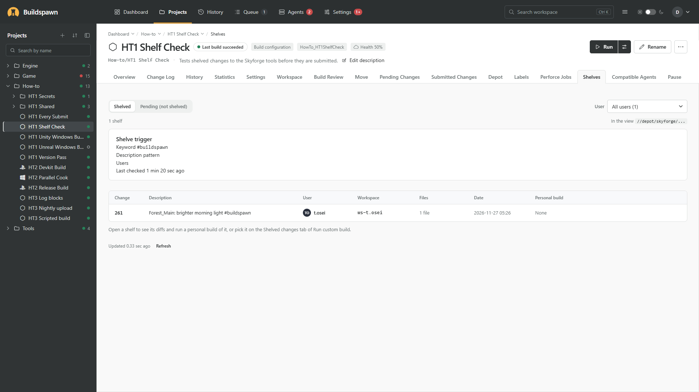
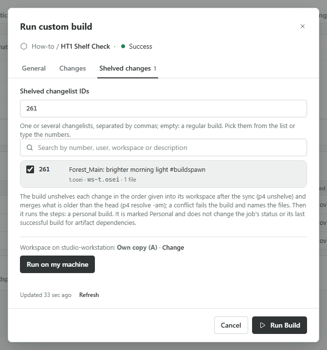
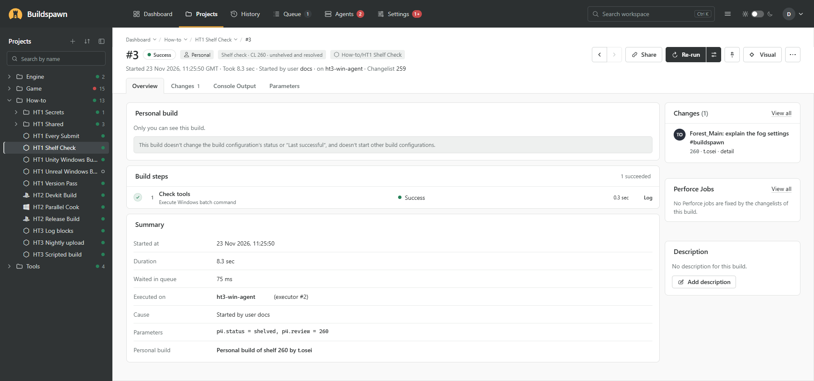
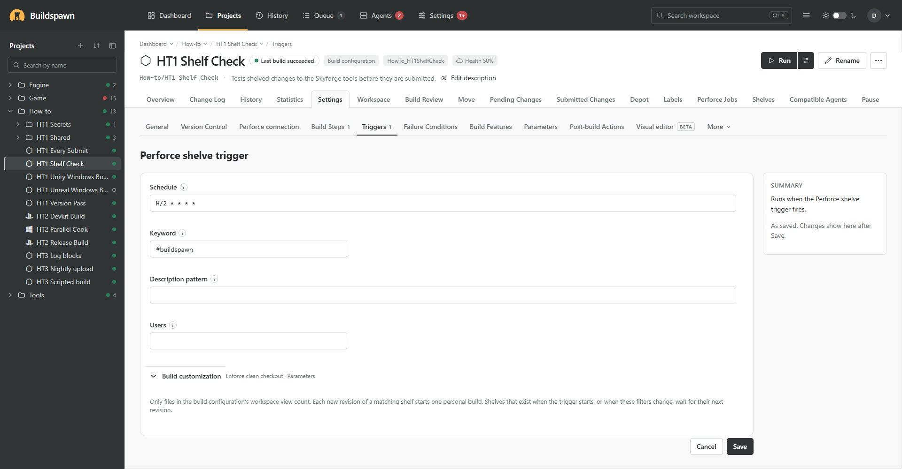

Test a shelved change before you submit
Run a personal build of a shelved changelist, so you know your change builds before it reaches the depot.
Before you start
- A build configuration with a Perforce connection whose view holds the files you changed. See Build every Perforce submit for how to set one up.
- A change you have not submitted yet, in a pending changelist in your own workspace.
- The permission to run builds of that build configuration.
A shelf (shelved changelist) stores your files on the Perforce server without submitting them. A personal build syncs the latest code, puts your shelved files on top and runs the steps. It does not change the status of the build configuration.
Steps
Shelve your change
- In P4V, right-click your pending changelist and choose Shelve. Or, on the command line:
Use your own changelist number instead ofp4 shelve -c 261261. - Note the changelist number. You pick it in Buildspawn in a moment.
Run a personal build
- Open the build configuration, for example HT1 Shelf Check in the How-to project.
- Click the Shelves tab. Your shelf is listed with its description, user, workspace and files. If you don't see it, click Refresh at the bottom.

The Shelves tab lists the shelves in the build configuration\'s view. The Personal build column fills in after the build. - Click the button beside Run (Run custom build).
- Open the Shelved changes tab.
- Tick your shelf in the list, or type its number in Shelved changelist IDs. To build several shelves together, separate the numbers with commas.

Pick the shelf on the Shelved changes tab. - Click Run Build.
Check it worked
- Open the new build. It has a Personal chip beside its result.
- In Summary, the Personal build row names your shelf and its owner, and Parameters shows
p4.status = shelvedandp4.reviewwith your changelist number. - Changes lists your shelved changelist.
- If the build passed, submit your change. If it failed, fix it, shelve again and run another personal build.

Run it on your own computer
If an administrator has turned on personal machines, you can run the same personal build on your own computer. Add your computer once under My machines in your account menu. Then, on the Shelved changes tab, pick your shelf and click Run on my machine, or choose My machine in the Agent list. Only you can build there, and the shelved files are reverted after the build. See Personal builds and shelves.
Show the result to a colleague
A personal build is private. Open the build and click Share to copy a link that lets someone else read it. Click Stop sharing to turn the link off. See Shared builds.
Build every new shelf on its own
If your team wants every shelf checked, add a shelve trigger. People then only add a keyword to the changelist description.
- Open the build configuration's Settings, then Triggers.
- Click Add new trigger and click Add on Perforce shelve trigger.
- Keep the Schedule, for example
H/2 * * * *. It says how often to look for new shelves. - Keep the Keyword
#buildspawn, or type your own. Only shelves whose description holds it are built. - If you like, limit it further with a Description pattern (a regular expression) or a list of Users.
- Click Save.

Shelves that already exist when you add the trigger are not built straight away. They are built when someone shelves them again. The same happens when you change the filters.
Troubleshooting
| Problem | What to do |
|---|---|
| My shelf is not in the list. | The list only shows shelves with files inside the build configuration's view. Check the view on Settings › Version Control. The list is also kept for a while: click Refresh. |
| The build fails before the steps and names some files. | Your shelf conflicts with newer submits. Sync your workspace, resolve the files, shelve again and run a new personal build. |
| The shelve trigger did not start a build. | Check that the description holds the Keyword and that your user is in Users, if that is filled in. A shelf that existed before the trigger needs a new revision: shelve it again. |
| The build configuration turned red after a personal build. | It doesn't: personal builds never change its status. Look for a regular build that failed at the same time in History. |